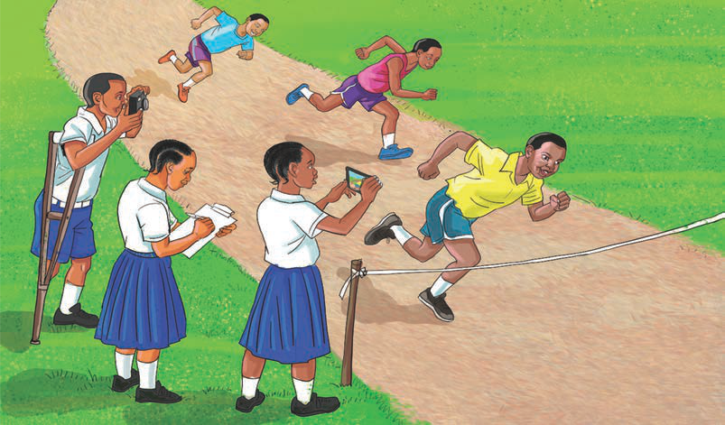

(f) Kujifunza na kushiriki katika shughuli zilizopo katika jamii zetu ili kuziendeleza; na
(g) Kuhimiza ukuzaji na utunzaji wa asili za jamii ili kuziendeleza kizazi hadi kizazi.
Kusimulia maarifa na ujuzi wa asili, asili za jamii na urithi katika jamii
Kazi ya kufanya namba 3
Fikiri, kisha andika mbinu za kutumia kusimulia maarifa na ujuzi wa asili, asili za jamii na urithi uliopo katika jamii inayokuzunguka.
Tunaweza kutumia mbinu mbalimbali kusimulia maarifa na ujuzi wa asili na urithi wa kihistoria katika jamii inayotuzunguka.
Chunguza Kielelezo namba 1, kisha fanya zoezi linalofuata.

Kielelezo namba 1: Wanafunzi wakikusanya taarifa za matukio shuleni
Historia ya Tanzania na Maadili STD 3 PB Final.indd 111
29/11/2024 17:15